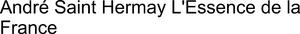

Trade Mark Journal No.2025/025 20 June 2025
WO0000001843009 (3,4,14,18,25)
Office of origin: France
Date of International Registration:29 August 2024
Date of designation in the UK:
29 August 2024

International priority date claimed: 29 February 2024
(France)
(5034725)
- Class 3
- Cosmetic products; perfumery products and perfumes; essential oils; air fragrance reed diffusers; amber [perfume]; ionone [perfumery]; musk [perfumery]; incense sticks; incense; potpourris [fragrances]; scented wood; massage candles for cosmetic use; cosmetic oils; perfumed oils; oils for perfumes and scents; natural cosmetic products; eau de parfum; air fragrances; air fragrance reed diffusers; aromatics for perfumes; ceramic diffusers for perfumes; products for perfuming linen; room perfumes in the form of sprays; scented wax melts [fragrancing preparations]; fragrance refills for non-electric room fragrance dispensers; eau de cologne; eau de toilette; scented water; perfume extracts; soaps; lotions for hair; bath or shower gels and salts for cosmetic use; cosmetics for skin, body, face and nail care; creams, milks, lotions, gels and powders for the face, body and hands for cosmetic use; make-up products; body deodorants; cosmetic products, substances and preparations for the treatment, care, perfuming and beautification of the skin, hands, body, face, eyes, hair, scalp, teeth and/or nails; all these products are of French origin or made in France.
- Class 4
- Candles [lighting]; scented or unscented combustible waxes; perfumed candles; candles; lighting fuel; oils for lamps; votive candles; table candles; candles for special occasions; wax for making candles; illuminating wax; tapers; church candles; candle making kits (wax, molds, wicks); wicks for candles; lamp wicks; all these products are of French origin or made in France.
- Class 14
- Jewelry ("joaillerie"); jewelry; precious metals and alloys thereof; unwrought, semi-wrought or wrought precious metals; precious, semi-precious stones and pearls; art objects and decorations of precious metals and their alloys, as well as of unwrought, semi-wrought or wrought precious metals, with or without precious, semi-precious stones and/or pearls, and/or imitations thereof; works of art made of precious stones; jewels of precious metals and their alloys, as well as of unwrought, semi-wrought or wrought precious metals, with or without precious, semi-precious stones and/or pearls, and/or imitations thereof; art objects of precious, semi-precious stones, pearls and/or imitations thereof; jewelry-fine jewelry articles of precious metals and their alloys, as well as of unwrought, semi-wrought or wrought precious metals, with or without precious, semi-precious stones and/or pearls, and/or imitations thereof; fashion jewelry; clocks; timepieces and chronometric instruments; alarm clocks; sundials; cases for clocks and watches; wall clocks; small clocks; dials [timepieces]; watches; wristwatches; chronometers; wall clocks; watch bands; watch chains; watch springs; watch glasses; rings [jewelry]; key rings; cases or presentation cases for timepieces; medals; movements for timepieces; finger rings [jewelry]; ornaments [jewelry]; jewelry articles; necklaces; jewelry cases; watch cases [boxes]; boxes of precious metal; bracelets; earrings; chains [jewelry] for necklaces; brooches [jewelry]; medallions; pendants; tie pins; pearls; cuff links; tie clips; charms; key rings of precious metal; bag jewelry; decorative articles [charms or jewelry] for telephones; statues of precious metal; figurines [statuettes] of precious metal; commemorative plaques of precious metals; boxes and decorative boxes of precious metals; precious, semi-precious stones, pearls, and imitations thereof; precious metals and their alloys, and imitations thereof; unwrought, semi-wrought or wrought precious metals, and imitations thereof; statues and figurines, made of or coated with precious or semi-precious metals or stones, and/or imitations thereof, ornaments made of or coated with precious or semi-precious metals or stones, or coated therewith, copper coins and tokens; metal tokens used for vending machines or machines for playing games; key rings of leather; all these products are of French origin or made in France.
- Class 18
- Leather and imitations of leather; wallets; purses (coin purses); card cases; document cases; attache cases; attaché cases; toiletry bags; vanity cases, not fitted; clutch bags [evening handbags]; small clutch handbags; make-up bags; bags; handbags; travel luggage; bags for airplane travel; traveling chests, trunks and suitcases; backpacks; beach bags; net bags for shopping; sports bags; wheeled shopping bags; umbrellas, parasols and walking sticks; umbrella covers; walking-stick handles; umbrella handles; suitcase handles; fabric bags; small bags and bags [envelopes, pouches] of leather for packaging; boxes of leather or leatherboard; hat boxes of leather; key cases (leather goods); tidies of leather; tie cases; all these products are of French origin or made in France.
- Class 25
- Clothes [clothing]; footwear; shoes; stoles; scarves [clothing]; shawls; ponchos; pareus; headwear; clothing for children, men and women; bath wear; belts [clothing]; underwear; slips; lingerie [underwear]; day, evening and night wear; dresses; suits; shirts; gloves [clothing]; mittens; fingerless gloves; hats, caps, bathing caps and other headwear; ski suits and gloves; scarves; long scarves; neckties; collars [clothing]; socks; cuffs [clothing]; money belts [clothing]; bath slippers; work suits; school uniforms; sportswear; masquerade costumes; evening, formal, bridal gowns; formal wear; ready-made clothing; all these products are of French origin or made in France.
Monsieur Albertini André
Representative: ARDAN, 18 avenue de l'Opéra, F-75001 Paris, FRANCE